真实AI流水线很少只跑单一模型。一个解析文档、下一个提取字段、第三个重排搜索、视觉模型读图、最终模型负责生成。这篇X长文讲的是：如何在一块GPU上用一套服务层，同时把SLM、OCR、NER、重排序器、目标检测器一起供起来。
本文为akshay_pachaar的长文全中文编译，讲透「为什么小模型流水线会碎片化」「标准服务工具的坑」，再给开源Superlinked Inference Engine（SIE） 的解法，图文全保留。
生产级AI系统正从单一大型模型处理一切，转向多个小型模型各司其职。
一个解析文档，下一个提取字段，第三个重排搜索结果，视觉模型读取图像，最终模型负责生成。
在模型层面，这通常能大幅降低成本。
但模型只是推理成本的一部分。你仍需GPU来运行它，内存来保持加载，以及服务层来批处理和调度经过它的请求。
若不想自行运维该基础设施，可将其托管给管理型提供商。
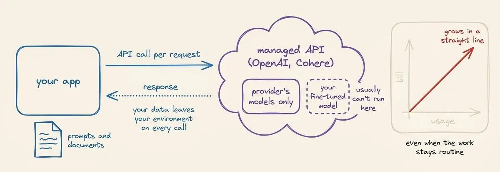
当希望快速启动时，这很有效，但成本会随提供商使用量增长而增加，且失去对可运行模型及数据流向的控制。
对于需要对模型、数据和基础设施拥有更高控制权的团队，自托管是自然之选。
尽管单个小型模型在自托管中易于容纳，但真实的业务问题很少止步于一个模型。
专用模型旨在将某一狭窄任务做好。您需要多个模型，各自处理工作的一部分，并整合到一条业务流水线中。
此时，基础设施必须保持所有这些模型可用并为其提供服务。
减速的钱回来了：你靠换小模型省下的成本，可能被它的服务方式加倍吐回去。
大多数生产级Agent（智能体）系统并非运行在单一模型上。它们使用多个较小的专用模型，每个模型处理不同类型的计算。
由于这些模型的工作方式不同，服务层通常也会随工作负载而变化。
两个常见例子是vLLM和TEI：
LLM（大语言模型）逐个生成token，每个新token都需要访问之前token的信息。这些历史信息存储在称为KV缓存的结构中。
vLLM围绕高效管理该内存而构建，采用名为PagedAttention的技术，使GPU能够处理大量生成请求，而不会浪费大块内存。
嵌入和重排序模型没有这个问题。它们读取一次输入，返回一个向量或相关性分数；没有逐token生成的过程。
这正是Hugging Face的Text Embeddings Inference（TEI）的用武之地。
它专为嵌入和重排序工作负载而构建，这些请求可以通过简单的批处理来处理，而非生成过程中使用的KV-cache机制。
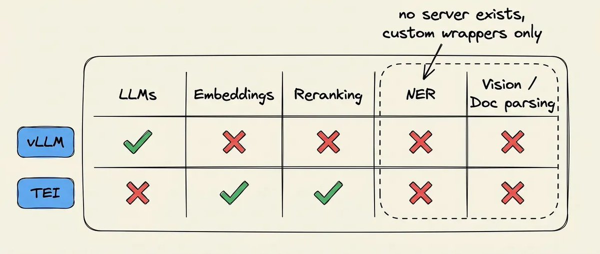
文档解析、OCR以及许多视觉或提取模型不符合上述任一服务模式。因此，Docling、Grounding DINO和GLiNER等模型往往最终部署在各自的自定义服务器上。
这就是多模型流水线最终碎片化的原因。一个模型跑在vLLM上，另一个在TEI上，其余由自定义API处理。
以洪水保险理赔的审核流程为例：
阅读文档 → 提取理赔细节 → 匹配正确的保单条款 → 检查洪水损坏照片 → 撰写摘要
在碎片化方法下，这五个工作负载通常会变成多个独立管理的服务组件。
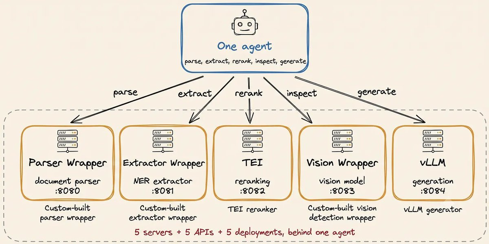
一旦智能体原生流水线开始使用多种模型类型，多框架服务问题也会演变成硬件问题。
尽管流水线依赖vLLM、TEI和自定义服务器的组合，每种工具在其领域内都表现出色。挑战在于决定这些模型实际应在何处以及如何运行。
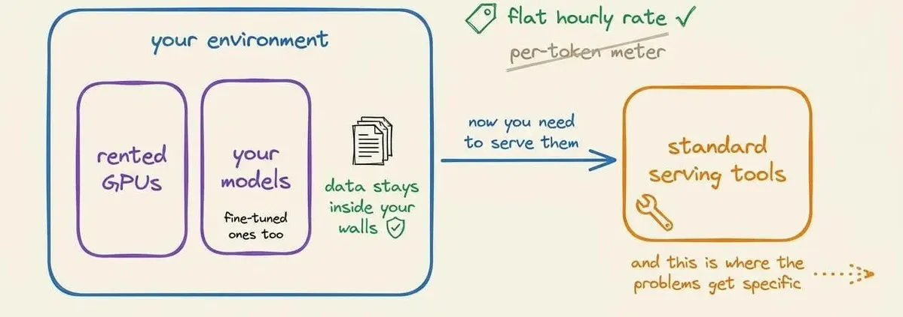
遗憾的是，使用当今标准的AI服务工具，这两种配置都无法顺利工作。
最简单的配置是为每个服务栈分配自己的GPU。无需管理资源共享，每个服务都能获得所需的硬件资源。
vLLM在一张GPU上处理主LLM，TEI获得另一张用于嵌入和重排序，而你的文档处理、NER和视觉模型各自拥有专用的GPU。
虽然这种设置在操作上可行，但问题在于GPU成本和利用率。
问题在于，单个索赔按顺序通过这些阶段，因此每个专用GPU大部分时间都在等待轮到它。
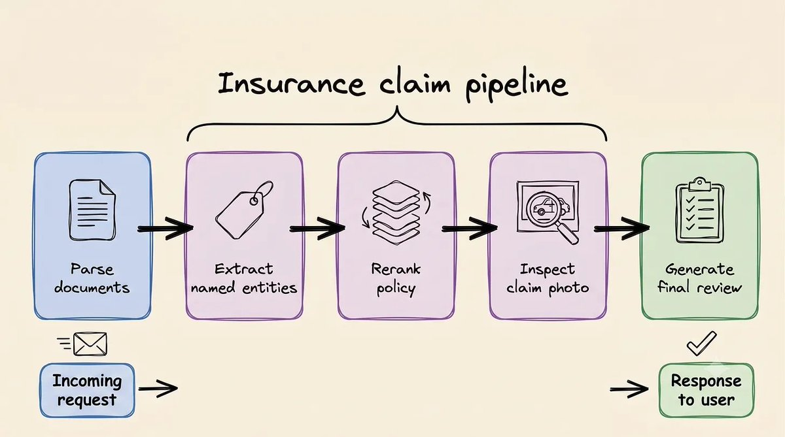
在多个索赔中，这些工作负载可以重叠，但这仍然不意味着每个专用GPU始终得到充分利用。
因此，如果每个阶段都有专用GPU，运行文档解析器的GPU在重排序器运行时处于空闲状态。然后重排序器在LLM运行时等待。
空闲的GPU也不会被释放或分配给其他任务。服务进程仍在其上运行，因此硬件在整个时间内始终分配给该阶段，无论它是否在执行操作。
这是一个实际的预算问题，因为GPU基础设施是按持有时间付费的，而不是按GPU实际计算的秒数付费。
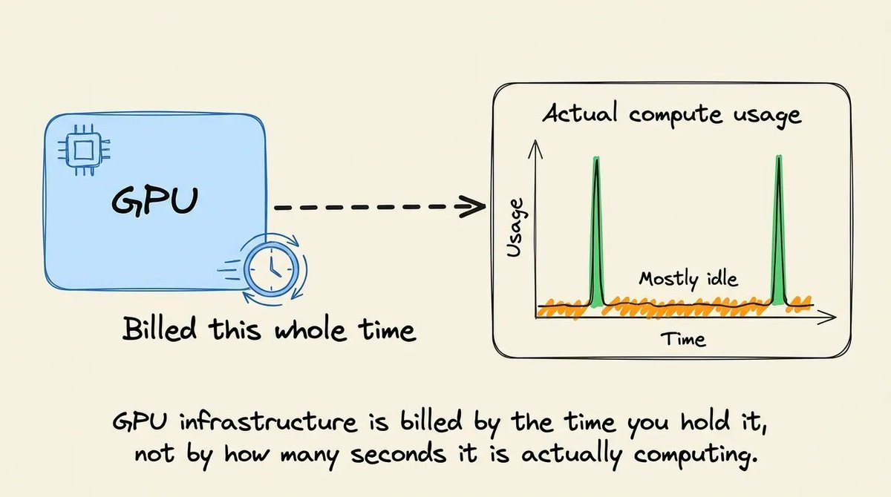
此外，许多这类专用模型体积足够小，无需占用整块独立GPU。
一个抽取模型、重排序器或小型视觉模型仅会使用L4 GPU 24 GB内存的一小部分，同时大部分时间都在等待任务。
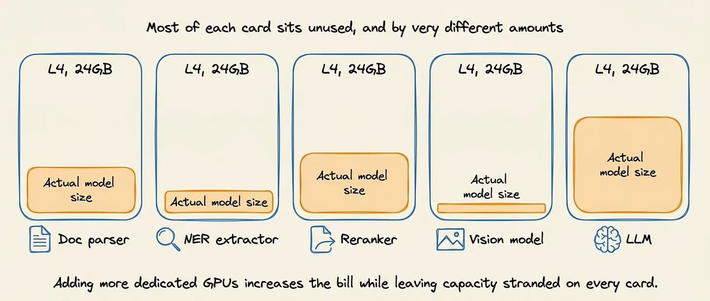
于是两难出现：为了省上模型的钱才换小模型，结果每加一个新的小模型任务，硬件数量反而跟着加。
从成本角度看，另一种选择看起来更优，即将多个模型部署在同一块GPU上。
当模型能容纳在GPU内存中时，没有根本理由要求每个模型独占一块GPU。例如，单个L4拥有24 GB内存，足以同时容纳多个小型模型。
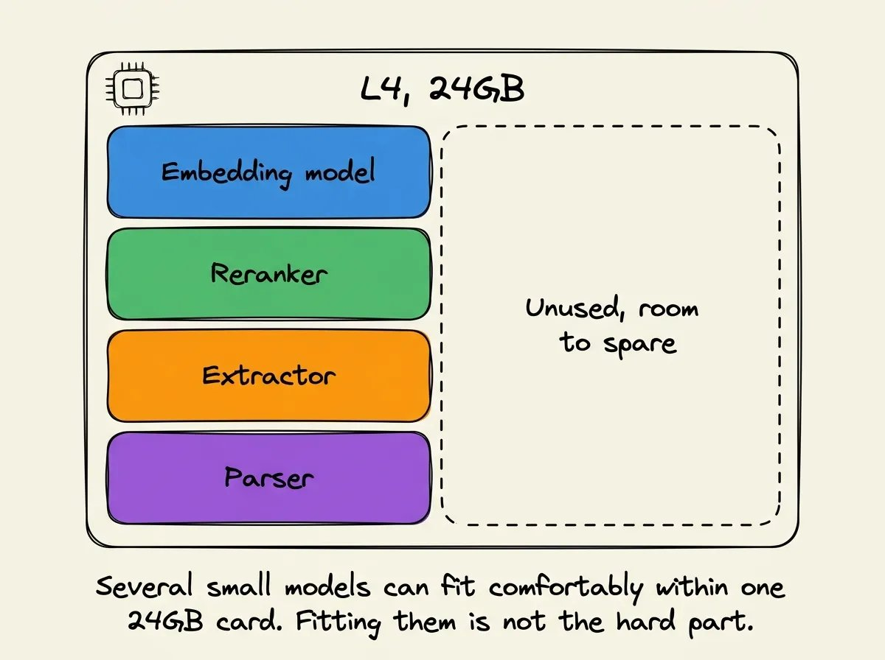
难点不在于将模型适配到显卡上，而在于让多个独立的服务进程高效地共享这块显卡。
服务进程通常围绕其启动时所用的模型构建，它管理该模型的内存、请求和批处理，却不知道同一GPU上其他进程的动态。
以vLLM为例，其--gpu-memory-utilization设置默认值为0.92，这定义了该实例允许使用的GPU内存比例。
在其旁再运行一个服务进程，该进程不会自动知晓vLLM已用内存或哪些内存可安全供其使用。
现在把vLLM、TEI和自定义解析/提取/视觉服务器全打包到同一块GPU：
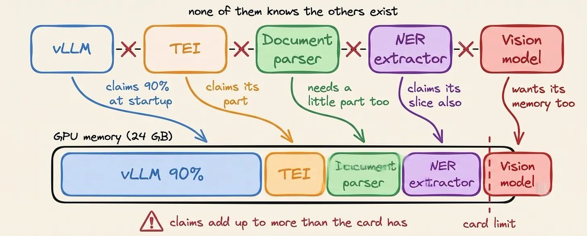
· 若给某进程分配过少的空间或显存，长文档或突发批次可能使该模型超出其限制。此时，它不仅自身失败，还可能拖垮共享该GPU的所有其他模型。
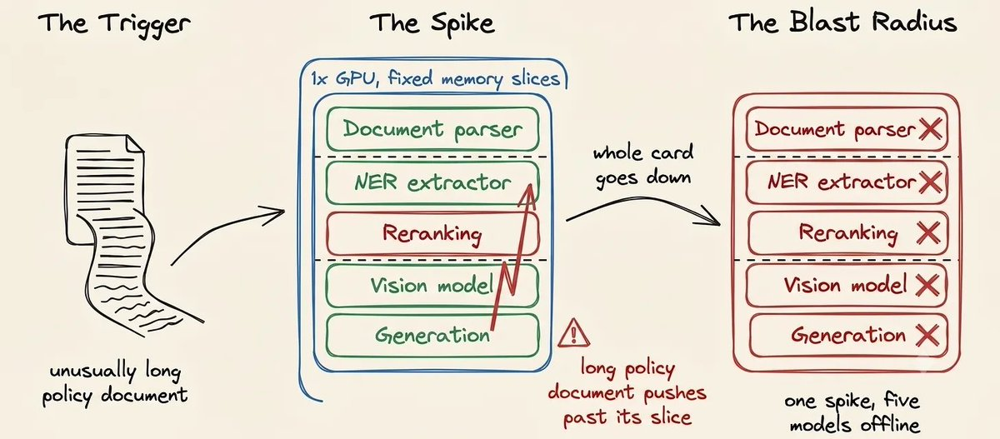
· 若给某进程分配过多的空间或显存，这些内存对其他模型而言便不可用，即便该进程自身空闲时也是如此。
当流量在阶段间移动时，情况会变得更糟。文档解析器可能会接收到突发的工作负载，而重排序器几乎无事可做。片刻之后，重排序器可能又成为流水线中的繁忙部分。
但内存分配并不会随工作负载移动。而内存只是问题的一部分。
每个服务进程还有自己的队列和批处理逻辑。它们中没有一个能完整看到其他模型等待中的工作。因此，没有一个单一的调度器来决定GPU应如何整体使用。
一个进程的队列可能为空，而另一个进程正在积压工作，但空闲进程不能简单地将未使用的容量转交给另一个进程。
这就是将标准服务工具组合在一块GPU上的真正局限。硬件可以共享，但服务进程仍独立运行。
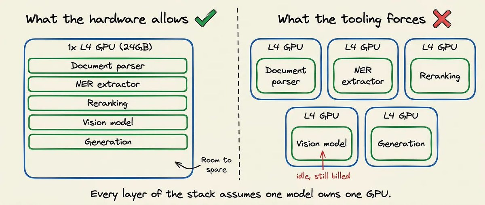
目前，我们有两种方式运行多模型流水线：
专用GPU更简单，但硬件与流水线一对一扩展。
共享GPU能更高效地利用硬件，但需要某种机制来协调卡上的模型。
对于这个流水线，我们选择第二种方案，因为它更符合我们的工作负载。
由于所用模型较小，且它们的工作负载不会同时达到峰值，因此有明显的机会让它们共享同一GPU，而不是为每个模型单独分配一张卡。
为此，我们的服务层需要将GPU作为共享资源进行管理。
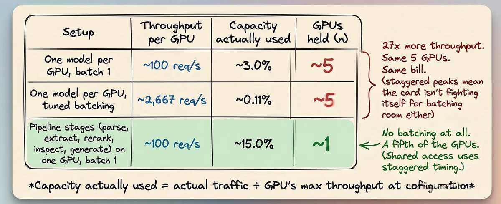
首先，不要急于寻找另一个框架，而是理解理想服务器需要完成的任务。
① 广度：服务器得在一个API后面同时跑嵌入、重排序、OCR、视觉、提取与生成。
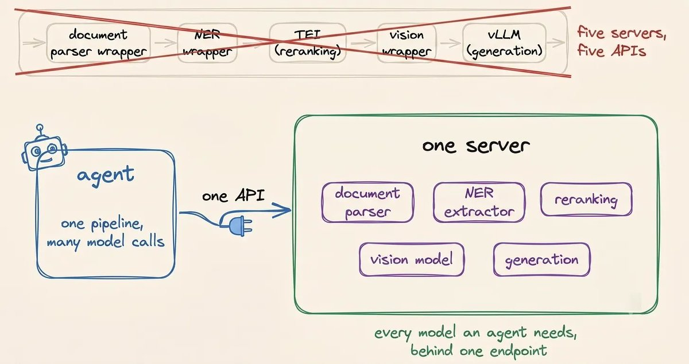
② GPU利用率：要把不同长度的请求打包进一次处理而不浪费算力，引擎必须为每种架构控制批处理与注意力路径。
③ 模型内存跟随流量：流量挪动时能加载/驱逐模型，让忙碌的常驻、空闲的让位。
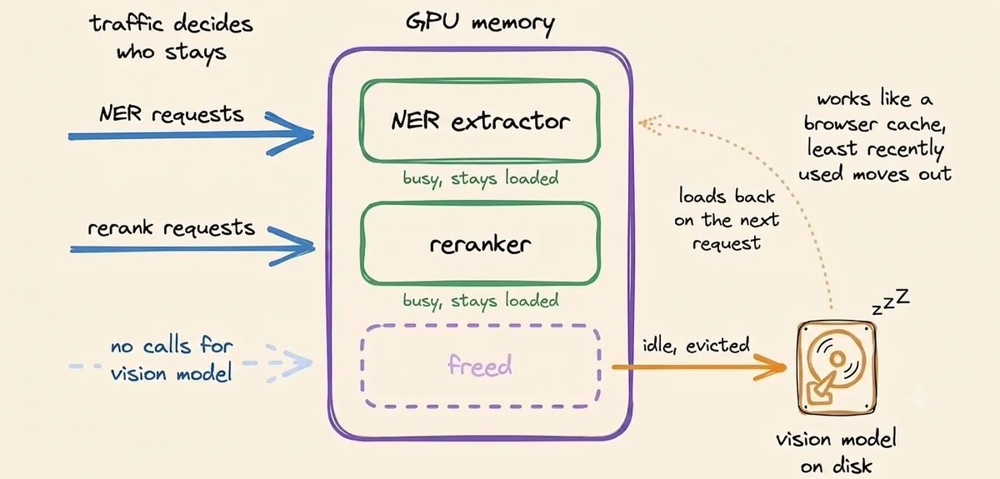
④ 生产级行为：路由、自动扩缩容、监控、GPU池：不能只像个裸引擎；加副本应是配置变更而非重新部署。
如今这些都得开发者从零搭，数月定制工程：因为不同模型家族底层差异巨大：
Qwen模型处理位置和注意力的方式不同。
ColBERT模型为每个token返回一个向量。
重排序器返回单一分数，不返回任何向量。
构建一个能够容纳所有这些形状并将其任意打包成完整批次的引擎，是至关重要的工作。这也是此前没有现成开源包的原因。
SIE是一个开源推理引擎，作为生产集群运行于共享基础设施上，支持多模型流水线。
它通过统一API支持100多个模型，使不同类型的模型能够通过同一服务层运行，而无需各自独立部署。
统一API固然有用，但更大的优势在于协调能力。SIE能够围绕同一GPU池管理这些模型。
它在您自己的云环境中作为一个集群运行，专为上述多模型流水线而设计，即多种不同类型的小模型在共享GPU上连续运行。
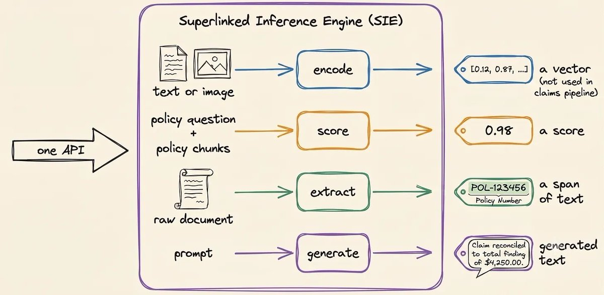
面向洪水理赔这类多模型流水线，SIE把「负载类型」折叠成3个功能原语：
extract（提取）：一个接口下干三种活：把表单/保单转成干净Markdown（docling）、抽取姓名/单号/日期等字段（GLiNER）、在图上做视觉检测。底层模型各异，服务接口无需且不和。
score使用bge-reranker根据查询对保单分块进行重排序，并返回排序后的列表。
generate汇总此前收集的所有信息：解析文档、提取字段、保单语言和照片分析：并使用Qwen3.5生成最终审查结果。
单个SIE集群即可运行全部五个阶段，无需为任一阶段单独搭建服务栈。这实现了五个阶段、三个原语和一个共享服务层。
API只是可见部分：真正的工作在底下，SIE要在共享GPU上实际协调这些模型。
1. 模型仅在需要时加载：请求实际需要才加载模型；GPU内存受限时，驱逐最近最少使用的模型。GPU不再是某模型的永久私有财产，而是一个可共享的池。
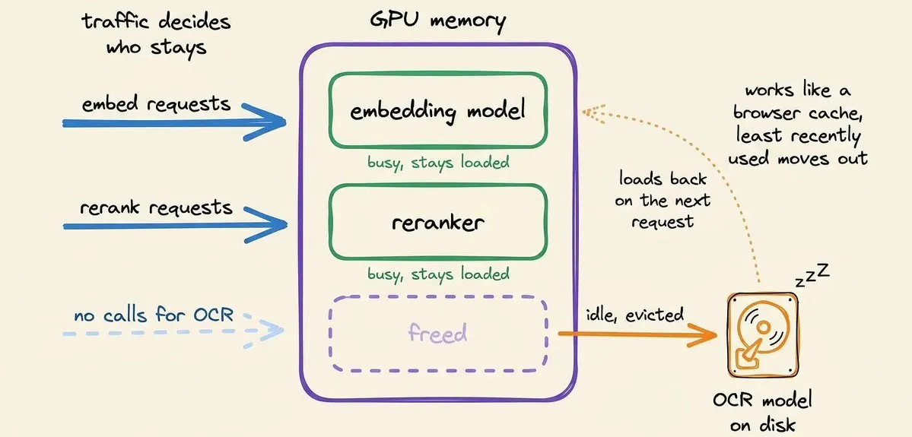
2. 单一队列统筹所有工作：独立进程时各模型只看自己的请求；SIE把工作放进共享队列：网关发布请求、worker就绪即拉。服务层得以跨模型看到工作负载。
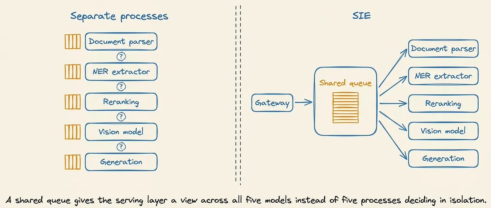
3. 批处理遵循计算成本：按请求的预估计算成本分组，而非固定数量一堆：免得短输入被pad到长输入长度、GPU大量时间花在填充上。
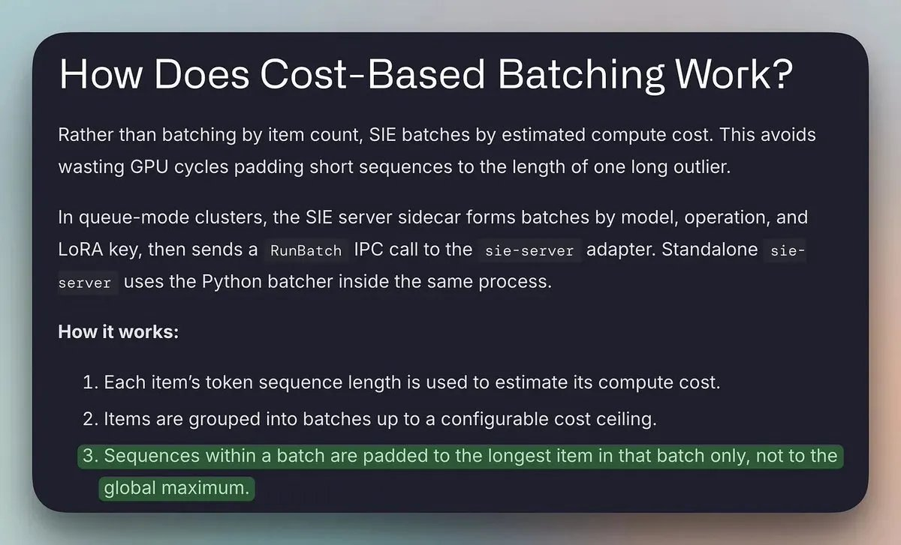
4. 共享服务器随工作负载扩展：网关 + worker层包在模型运行时外，迁移到生产也不断档；按需加/减worker，还带K8s基建、监控、AWS/GCP部署。
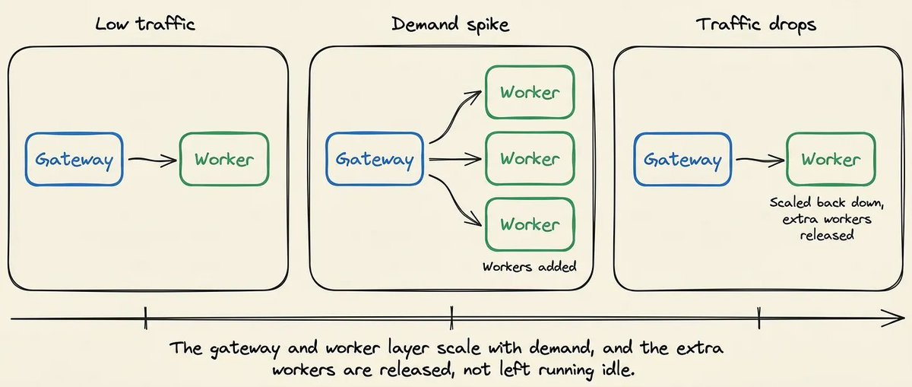
5. 模型自带服务配置：支持新模型不止下载权重，不同架构有不同内存/批处理/精度要求；SIE的模型目录（当前112个）把服务配置打包，按名引用即用。
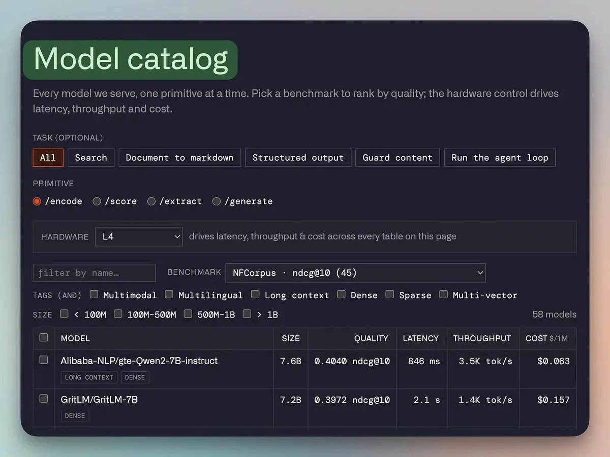
把上面几件事叠在一起，得到的一台引擎大致就是这样：一个能同时容纳多种任务形状、共享同一块GPU、并把批量、路由与扩缩替你管好的服务层。
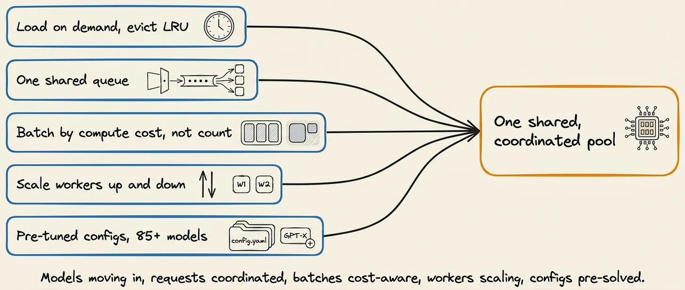
把上述架构放到真实场景。材料刻意弄得杂乱、来自公共领域，用于给流水线施压：损失证明表单、维修估价、保单文档、+ 实际洪灾照片一批。
在碎片化方法下，这同样是前面提到的五工具扩展。SIE改为通过一个共享集群运行这五个作业。
五个模型没有一个做同样的事：碎片化下要五套服务设置，SIE用一个共享集群跑这五个作业。
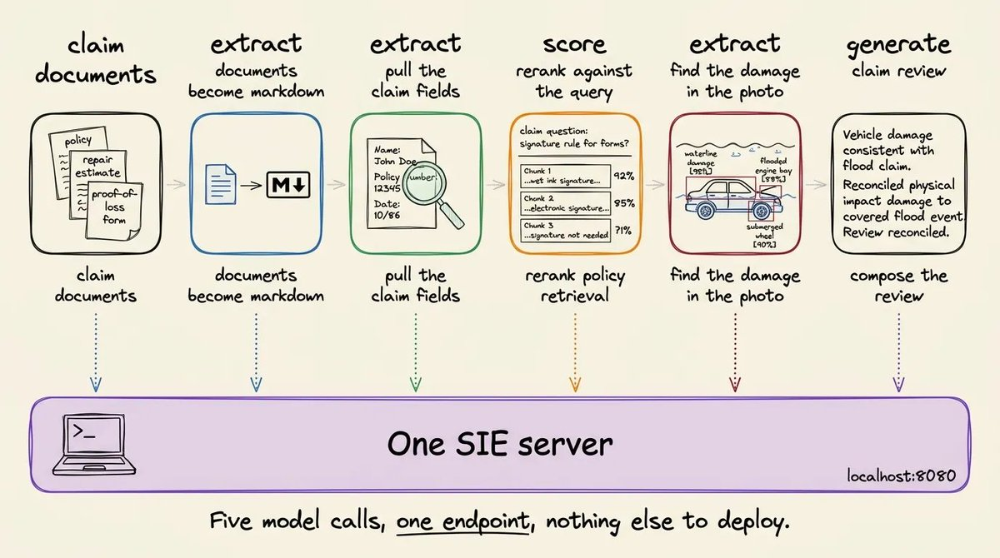
落到真实启动，就是这个集群跑五个不同作业的样子：每阶段命中一个模型，都在同一端点、同一调度之内。
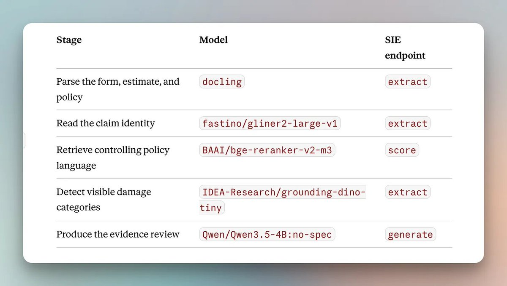
先安装并启动服务器（serve命令在8080端口拉起服务）：
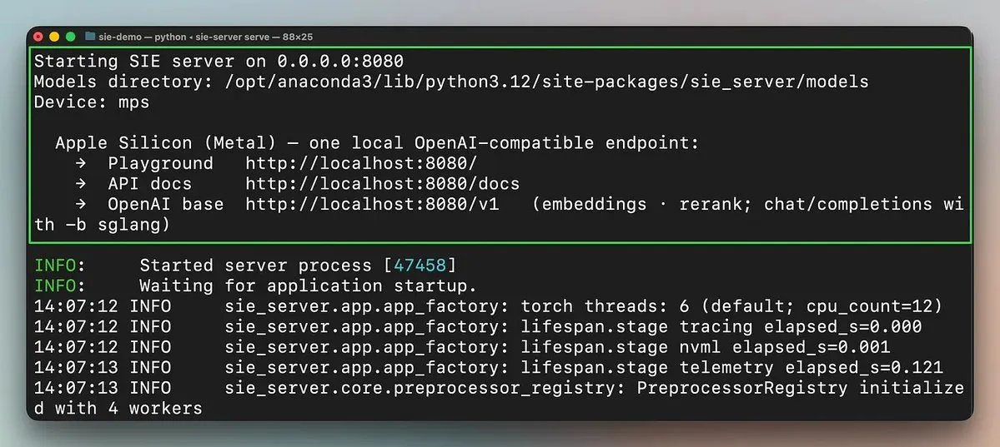
pip install "sie-server[local]"
sie-server serve就绪后实例化客户端并指向运行中的服务器：管道里每个阶段都走这同一个对象、同一个端点，无论它背后命中哪个模型：
from sie_sdk import SIEClient
client = SIEClient("http://localhost:8080")每个阶段对应任务、模型与SIE端点，底层全部走extract/score/generate三个原语。
① 解析保单文档（extract / docling）：把损失证明表、维修成本、保单转成干净的Markdown，保留表格与布局。
② 提取索赔身份（extract / GLiNER）：把Markdown里抽出姓名、损失日期、财产地址等字段：GLiNER按你提供的标签做命名实体识别，无需预设模式。
③ 找保单条款（score / bge-reranker）：保单很长，先按关键词重叠粗筛（“proof of loss”“signed”“60 days”），把最强候选送交叉编码器重排；score() 返回的是排序后的结果，顺序即答案。
④ 读损坏照片（extract / Grounding DINO零样本）：零样本目标检测在图像里找“standing water”“flooded room”等类别：模型从没为此练兵，只是拿到文本描述就地匹配。
⑤ 写审核结论（generate / Qwen3.5）：把解析文档、结构化索赔、排序结果、照片分析攒成context，一次生成最终审核：输出锁JSON模式，有固定结构。
最终，我们拥有一个包含五个模型、三个共享原语（extract、score和generate）的完整流水线，通过一个客户端针对一个SIE集群运行。
关键在于这五个阶段不需要五个独立的服务堆栈。在该服务层之下如何放置模型取决于可用的GPU内存和需要运行的模型。
对于此示例，您还可以运行两个SIE服务器：
· 一个用于Docling、GLiNER2和重排序
· 第二个用于Grounding DINO和Qwen的生成
或者，如果您想复用单个GPU，可以加载一个模型包，运行其调用，释放它，然后加载第二个包。
因此，部署可以使用多个服务器或复用同一GPU。服务层保持不变。
端到端运行这五次调用，检查每个模型的返回结果，并观察整个pipeline如何通过SIE运行。
针对狭窄任务使用小型专用模型是正确的做法，这一点并无太大争议。
这些模型在其训练任务上足够准确，并且能将数据保留在自有环境中。
但转向小型模型本身并不会降低推理成本。它只是将成本从按token计费转移到租用的GPU上，若每个模型独占一块GPU，大部分硬件将闲置，而你仍需为此付费。
只有在模型共享GPU时才能实现节省，这要求有一个能运行所有模型的统一引擎。一旦用不同工具分别服务每个模型，每个模型又会独占一块GPU。
SIE（开源）已实现此功能，让你能在共享集群上运行Agent（智能体）所需的不同模型，并提供生产级路由和自动扩缩容，无需自行构建。
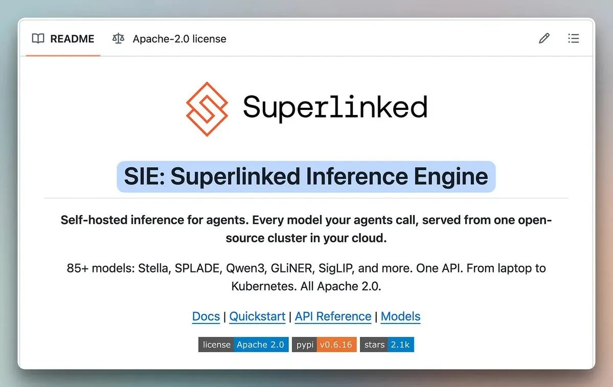
它还能接入现有技术栈，从向量数据库（Chroma、Qdrant）到Agent（智能体）框架（LangChain、CrewAI）均可兼容。甚至提供即插即用的OpenAI兼容接口，现有embedding或聊天功能只需指向新URL即可。
👉 互动环节：你的技术栈中单个请求会调用多少个独立模型？其中有多少目前正占用专用GPU？
生产级多模型推理让单一GPU干五份活，成本与自由兼得。开源项目见Superlinked GitHub（原始图、命令与完整仓库见参考链接）。
参考：https://x.com/akshay_pachaar/status/2084992645966016757